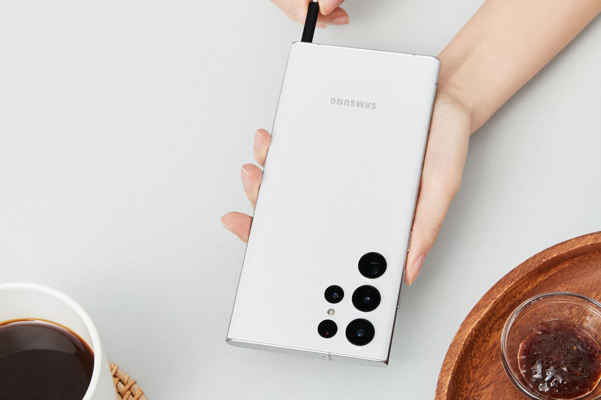
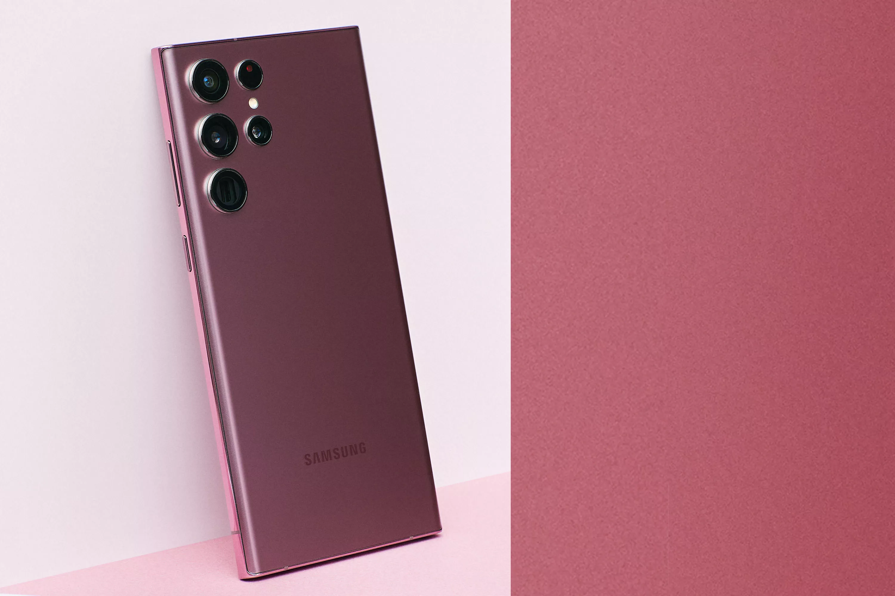

Samsung, yeni amiral gemisi Galaxy S22 Ultra'yı tanıttı.
Gece Modu

Emir Muhammed Muhammedi Karabağ
Bugün, 10 Şubat (20 Bahman) Samsung, bu yılki amiral gemisini tanıttı ve bu şık cihazı çevrimiçi bir etkinlikte kullanıcılara tanıttı.
Tasarım
Bu cihazın tasarımı yayınlanan görsellerle birebir örtüşmektedir.Bu cihazın arka ve ön panelinde Victus Gorilla Glass kullanılmıştır ve çerçevesi alüminyumdan yapılmıştır.Bu cihaz IP68 sertifikalıdır ve 30 saniye boyunca 1,5 metre suya daldırılabilir. Bu cihaz 6,8 inç OLED ekran kullanır.
Donanım ve pil
Bu cihaz, Snapdragon 8 nesil bir ve Exynos 2200 olmak üzere iki versiyonda satışa sunulacak. Samsung'un bu amiral gemisi telefon serisi, şirketin AMD ve RDNA2 yongası ile yaptığı işbirliği sayesinde yüksek grafik işlem gücüne sahip olacak. 1024 modeli olan bu cihaz 12, 512|12, 256|12 ve 128|8 piyasaya sürülmüştür.Bu cihazın RAM'i LPDDR5 tipinde olup, bu cihazın pili 5000 mAh olup, 45 watt ile şarj edilebilir. kablolu şarj cihazı ve 15 watt'lık kablosuz şarj cihazı. Cihaz, Android 12 ve OneUI 4 ile birlikte gelir
Kamera
Bu cihazın ana kamerası 108 megapiksel lens, tıpkı S21 Ultra gibi bu cihazda 12 megapiksel otofokuslu ultra geniş kamera, 10 megapiksel telefoto kamera ve 40 megapiksel selfie kamerası bulunuyor.
